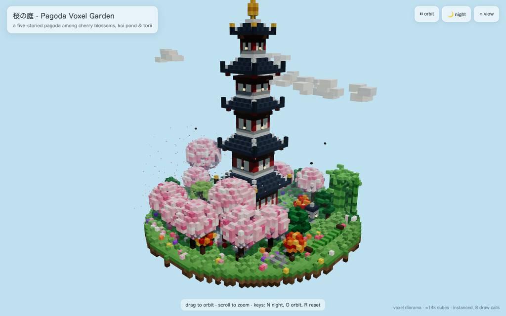

#12 · 21:5322:18 · strata-huihui-q3.8-fn-q4-xs · 8f2dd6a1
Strata-huihui-q3.8-fn-q4-xs 8f2dd6a1
- 所要時間
- 22:32
- 呼び出し
- 86
- 出力 tok
- 74,999
- 最大 ctx
- 114.0K
- キャッシュ
- 94.3%
huihui-qwen3.8-flash-next-abliterated-v2-ud-iq4_xs (Strata 0.1.48) が、五重塔のボクセル庭園を単一HTMLにする依頼を受け、86コール・経過1352秒で pagoda-garden.html (35KB) を完成させ exit 0 で終えた。#4 の一発生成で出力 20,961 トークンを吐いた後、edit 36 件と browser eval 18 件を往復して屋根・池・夜演出を作り込み、終盤はキャプション修正と後片付けで締めた。